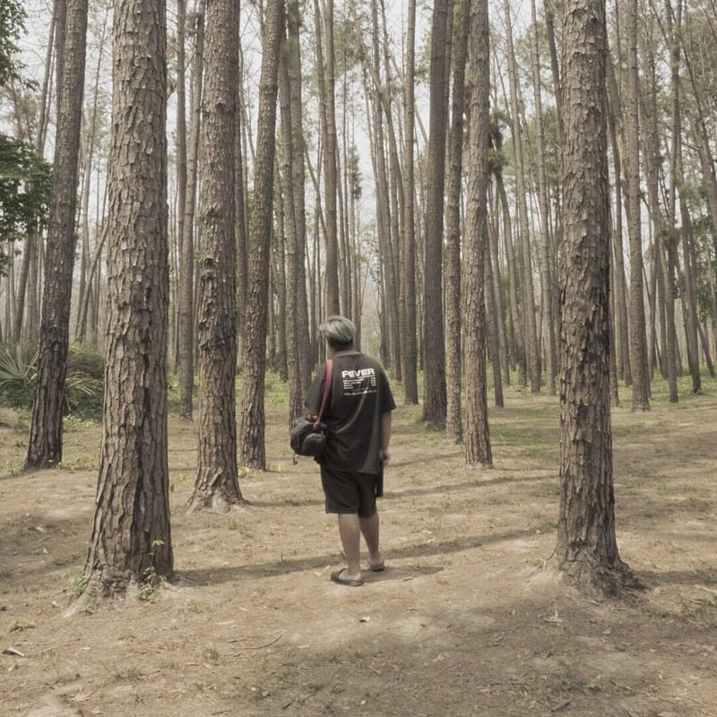

START HERE / FEATURED GAMING EDIT
Elden Ring gaming edit
A selected example of my gaming video work for creator-led content.
- My role
- Video editing
- Format
- Gaming video
Video editor for gaming & digital content.
I edit videos for YouTubers, streamers, and content creators. Explore my gaming, vlog, and audio work below.

I've been editing videos since I was about 12. What began as an interest has grown into my profession.
My name is Pannatorn Kulnara, but feel free to call me Bob. I primarily edit gaming videos for YouTubers, streamers, and content creators. My work also includes vlogs and audio mixing and mastering, and I'm expanding into podcasts.
Start with a featured gaming edit, then explore more work across gaming, vlogs, and audio.
A selected example of my gaming video work for creator-led content.
YouTubers and streamers
Blackbear Production
Vlog editing, graphic design, and audio mixing and mastering are also part of my practice.
Mahasarakham University Demonstration School (Secondary)
El Camino Real Charter High School · 1 year
Creative Media studies, Mahasarakham University · degree not completed